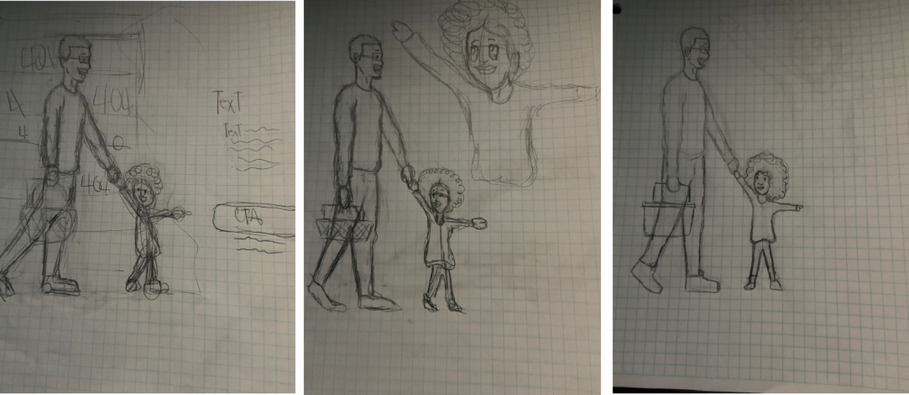
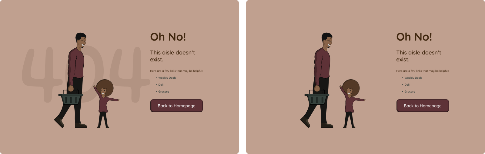

Design
| Color Psychology
For this design I decided to incorporate three colors:
| Font Style
Originally, I wanted to incorporate two fonts in my design which were Quicksand and Gluten. I decided to use Quicksand because it's a san-serif which increases the readability of text. I also chose Quicksand because of its rounded edges which gives the font a modern and somewhat playful appearance. I selected Gluten because of its cartoonish feel. Although I originally wanted to use two fonts, I decided to only use Quicksand in the final
404 page design.
| Iteration #1
I started off sketching how I envisioned the 404 page to look. My initial concept was to design a page that shows a father and daughter shopping. The daughter would be pointing at the call to action button to direct users to return to the homepage.
After sketching how I wanted the vector drawing to look, I started working on the microcopy. I wanted to make a straight to the point light hearted copy. I Also started to ideate what color to use for the call to action button.
| Iteration #1 High Fidelity
This is the first iteration of my 404 page concept.
| Iteration #1 Feedback
The feedback I received after the first iteration was that I should remove the shelf vector because it caused too much visual noise. I also had suggestions to change the call-to-action button to the catawba color and only use one font.
| Iteration #2
This is the second iteration of my design.
| Iteration #2 Feedback
| Final Design
 1.png)